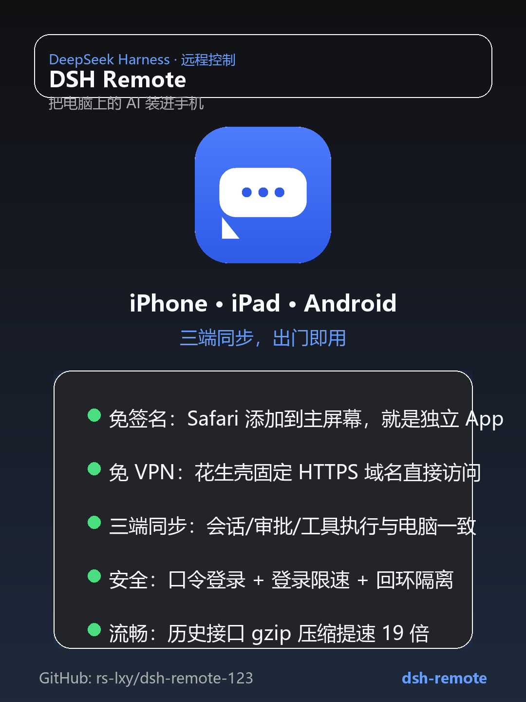
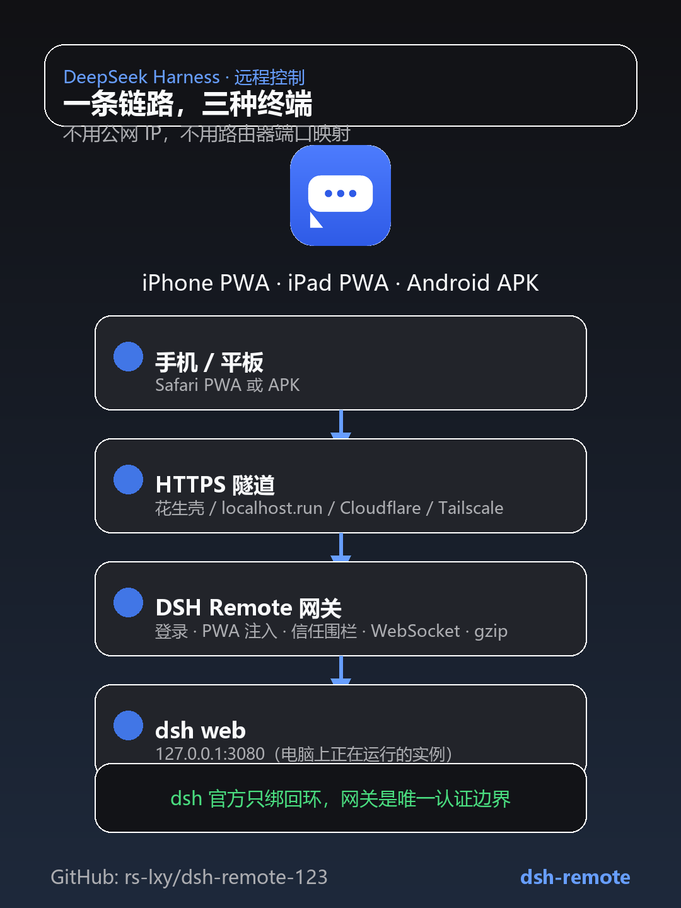
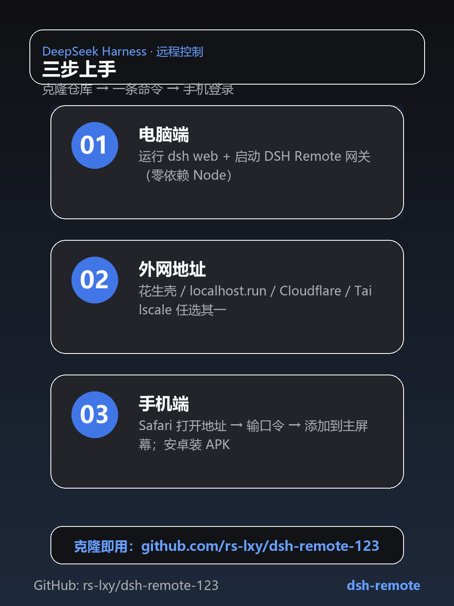

用 iPhone · iPad · 安卓随时随地远程控制电脑上的 DeepSeek Harness，与电脑端实时同步。免签名、免 VPN、免公网 IP。
Safari「添加到主屏幕」变成独立全屏 App，无需签名 / TestFlight。审批弹窗与实时事件原生可用。
内置两个现成 WebView 壳 APK，填地址 + 口令即连；密码经 Keystore 加密保存。
花生壳固定 HTTPS 域名 / localhost.run / Cloudflare Tunnel / Tailscale 任选，手机不用装 VPN。
口令登录 + HttpOnly cookie + 登录限速；dsh 始终只绑 127.0.0.1，公网只能过 HTTPS 网关。
会话历史自动 gzip：实测 4.45MB → 0.35MB，27.6s → 1.4s，1Mbps 免费隧道也流畅。
集成 @dsh/mobile-adapt：单列布局、全屏抽屉、全屏设置/详情、输入栏换行。



git clone https://github.com/rs-lxy/dsh-remote-123.git
cd dsh-remote-123
# 1. 确保电脑已运行: npx @deepseek-ai/dsh web
# 2. 启动登录网关
powershell -NoProfile -ExecutionPolicy Bypass -File server\scripts\start-gateway.ps1
# 3. 开一条外网通道（免注册推荐）
powershell -NoProfile -ExecutionPolicy Bypass -File server\scripts\start-remote.ps1
# 4. 手机打开打印的 PHONE URL -> 登录 -> Safari 添加到主屏幕dist/android/dsh-mobile-app-release.apk，地址填 https://你的地址/mobile。docs/oray-guide.md。